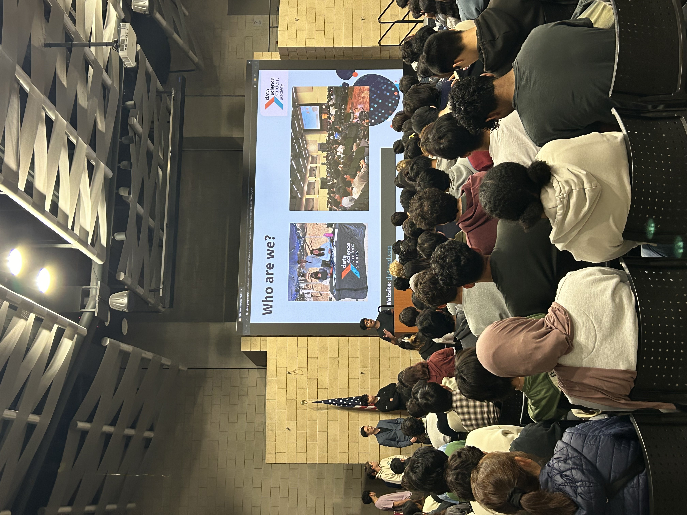
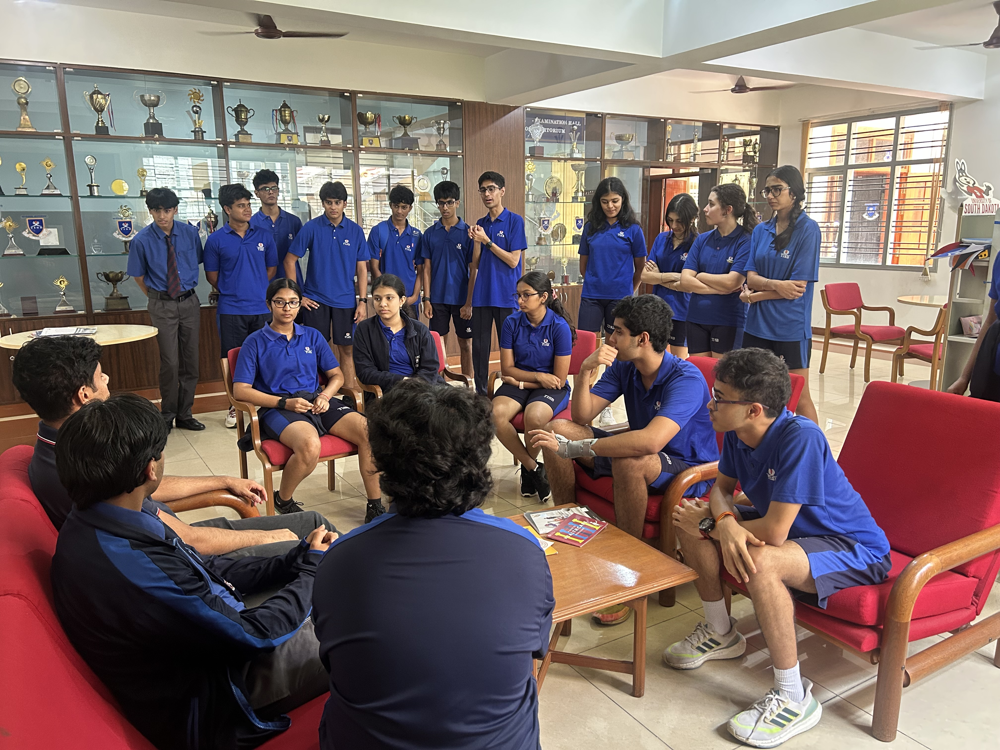
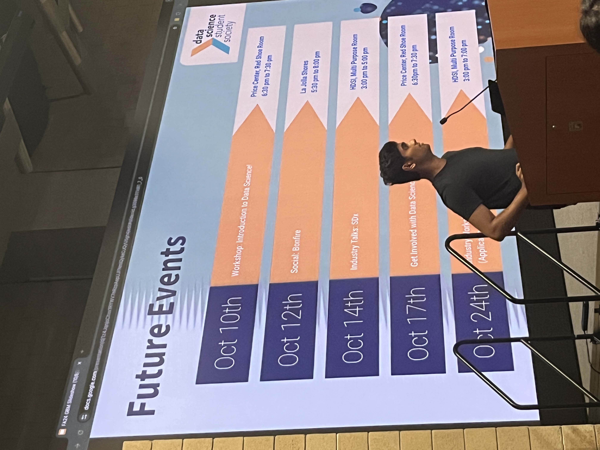
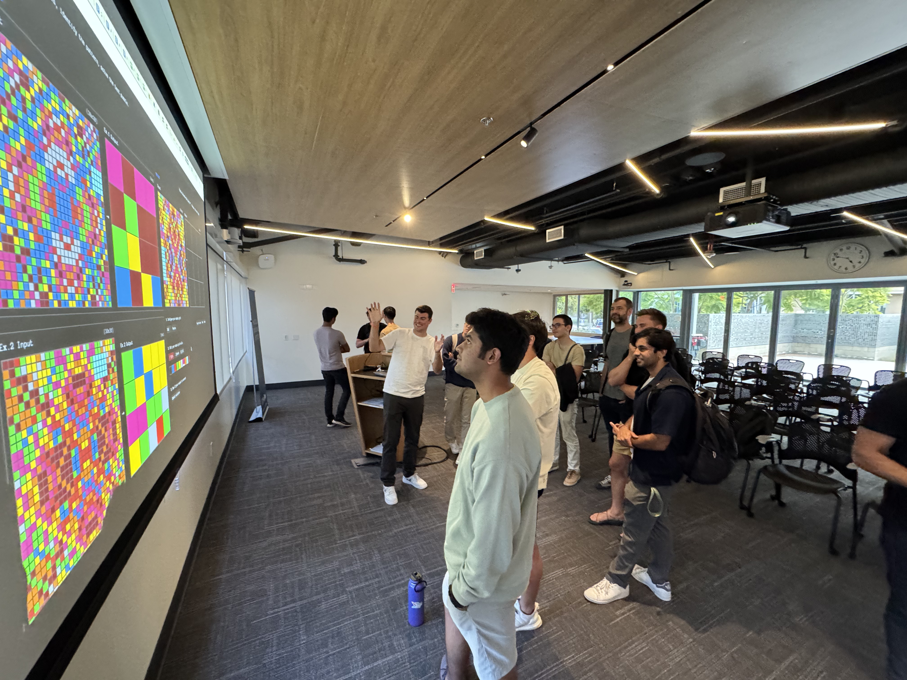
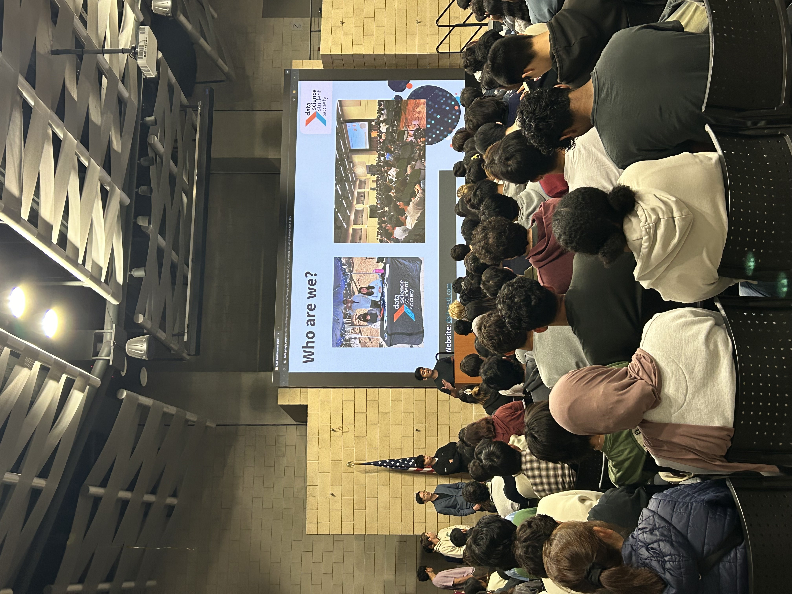
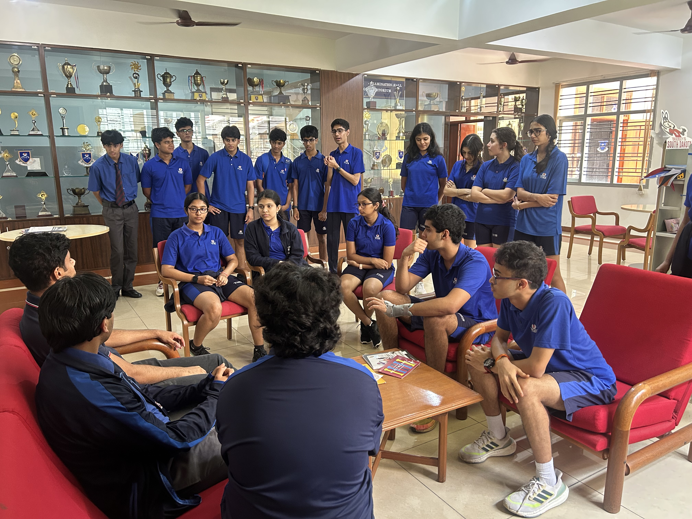
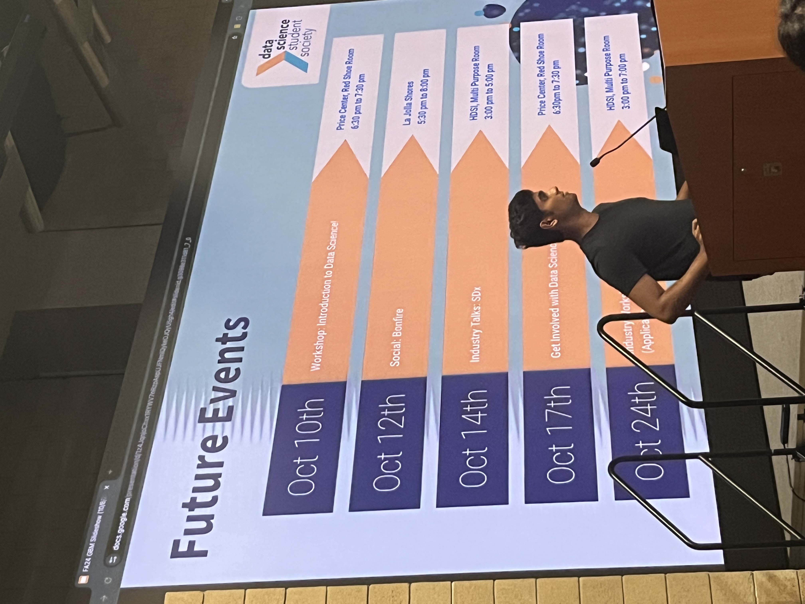
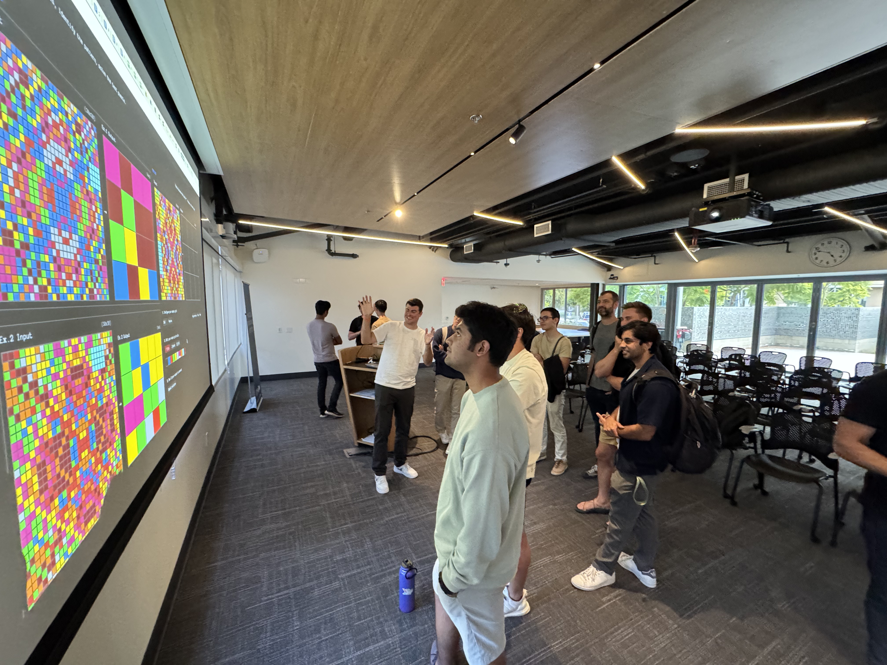

About Me
I am a multimodal AI researcher, currently working with Vision-Language models in robots at the Harvard AI and Robotics Lab under Dr. Mengyu Wang (PhD).
I was previously mentored by Dr. Talmo Pereira (PhD) at the Salk Institute's Talmo Lab where we developed sample-efficient and low-latency models for 2D and 3D markerless tracking using Computer Vision. I have also been mentored by Dr. Rajeev Jain (PhD) at Qualcomm, working on Generative AI solutions for VLSI.
I completed my undergaduate program at UC San Diego where I double majored in Mathematics+Computer Science and Cognitive Science. I am currently pursuing a master's degree at Harvard University.
If you are intereseted in reaching me, please add me on LinkedIn and we can continue the discussion there!

 







Experience
ML Research Assistant @ Harvard AI and Robotics Lab
2025 - Present
Buildling Vision Language Models for AI smart devices and robots
ML Research Assistant @ Salk Institute's Talmo Lab
2022 - 2025
Built markerless 2D and 3D pose tracking models using UNets and Vision Transformers.
AI/ML Research Intern @ Qualcomm
2024 - 2024
Worked on Generative AI models on the Global Machine Learning R&D Team
President @ Data Science Student Society at UC San Diego
2024 - 2025
Led a 500+ person organization, fostering industry-academic synergy.
AI/ML Research Scientist @ Probe Information Services
2024 - 2024
Developed a recomendation system for finanical similarity using GraphSAGE
Education
Harvard John A. Paulson School of Engineering and Applied Sciences
ME. Computational Science and Engineering
UC San Diego
BS. Mathemtaics + Computer Science & BS. Cognitive Science